Choose a mood, add a few photos, and a vertical video comes out colour graded, typeset and scored. No timeline, no keyframes, no account.
Three taps
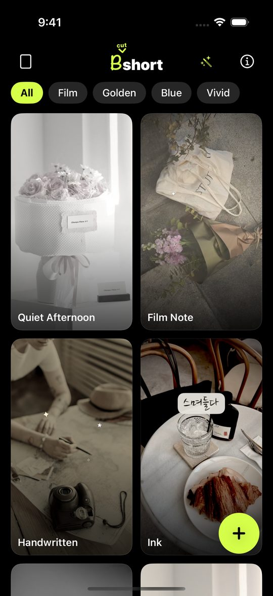
Every preview plays as you scroll. Filter by mood and tap the one you like.
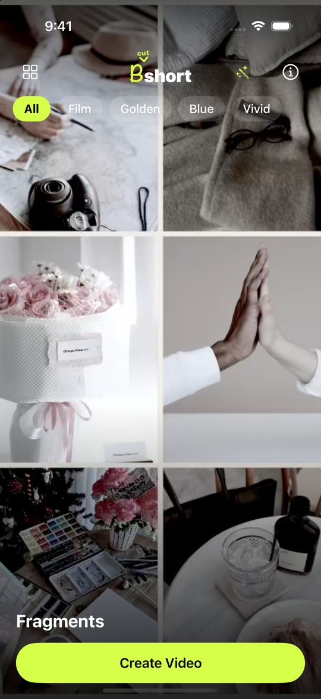
Tap Create Video, choose a few photos or clips, and it renders straight away.
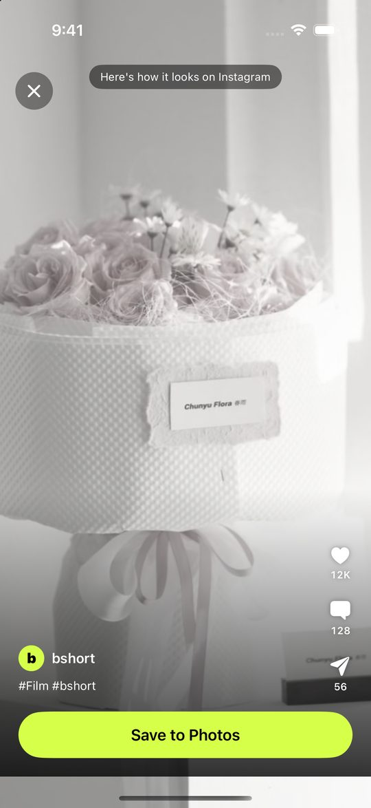
See it the way it will look once posted, then save it to Photos. Done.
Looks
Four moods — film, golden, blue and vivid. Every template has its own colour grade, type and track, so no two share a look.
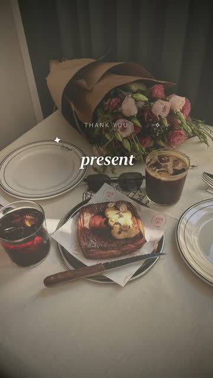
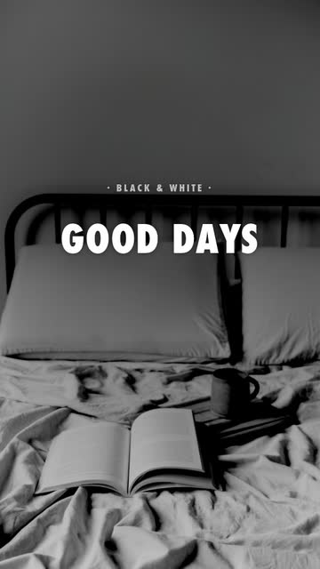
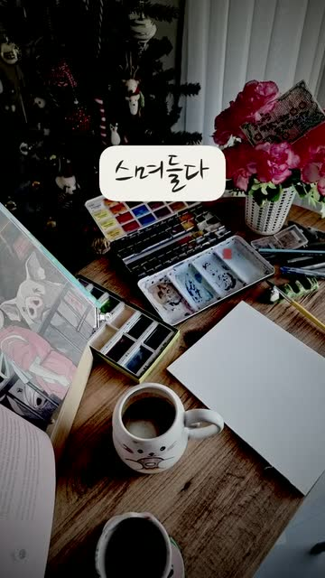
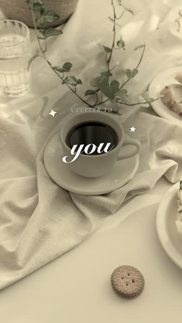
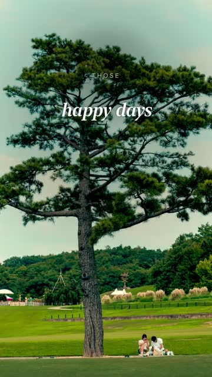
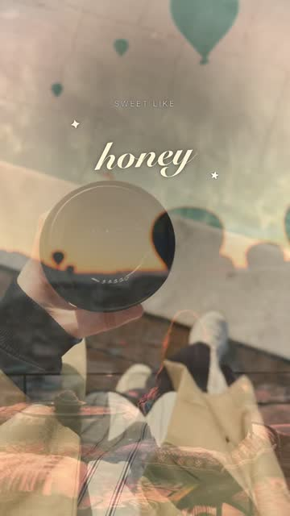
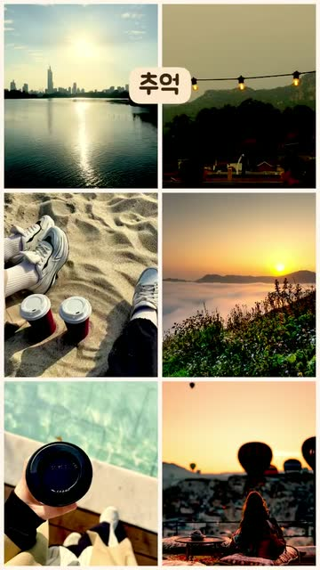
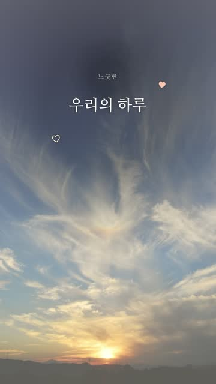
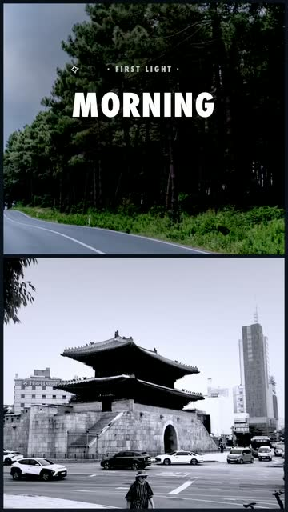
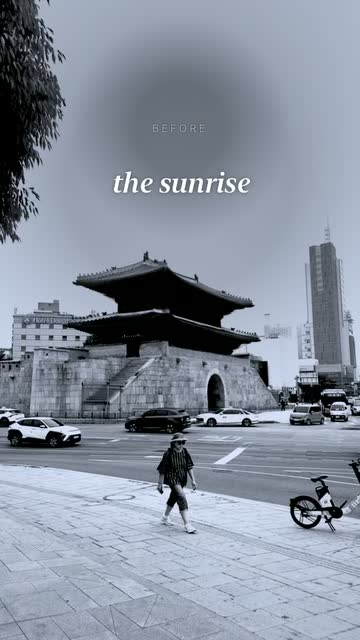
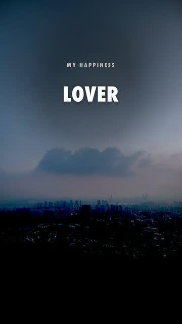
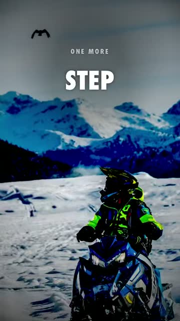
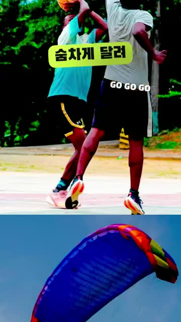
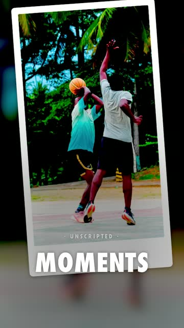
More fun
The app notices which way the person in your photo is facing and moves the character to that side, so it looks like you shot it together. Face direction is read on the phone and nowhere else.
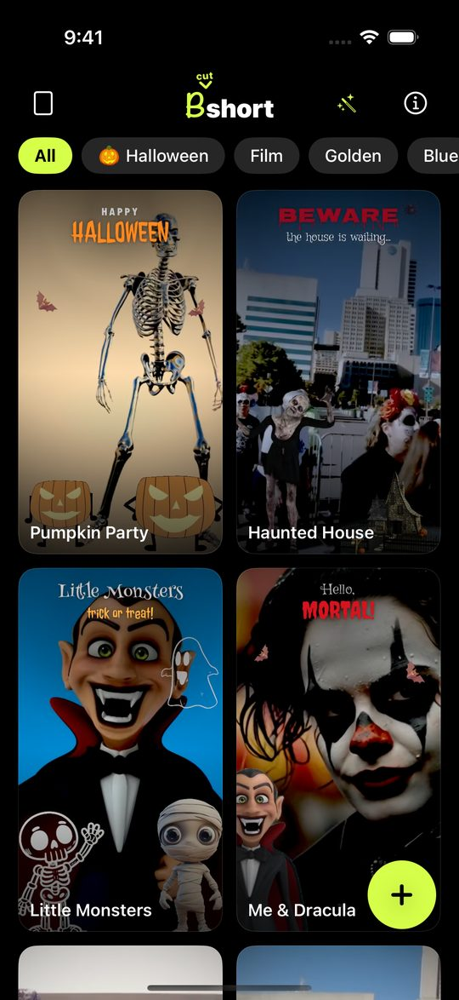
For seasons like Halloween, limited-time templates arrive without an app update — with moving characters and new transitions.
Dracula, skeletons and pumpkins stand next to the people in your photos, waving and dancing. You in the middle, the character at your side.
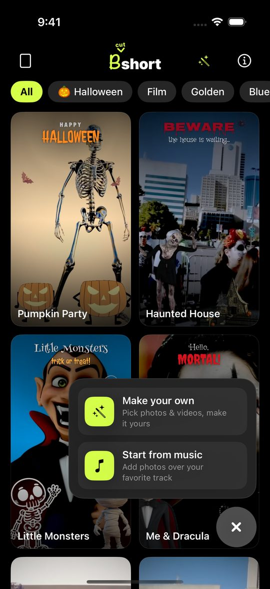
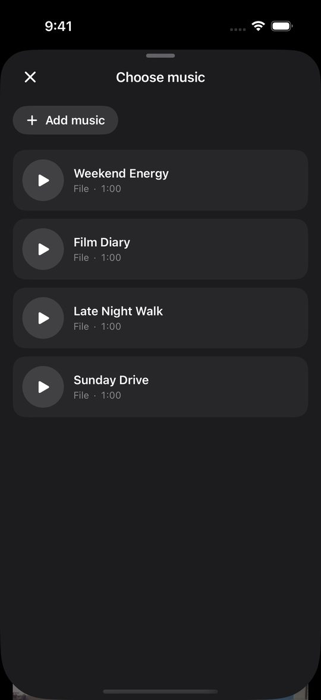
Make your own to set the order, timing and where your words go, then lay a track from a file or from a video underneath.
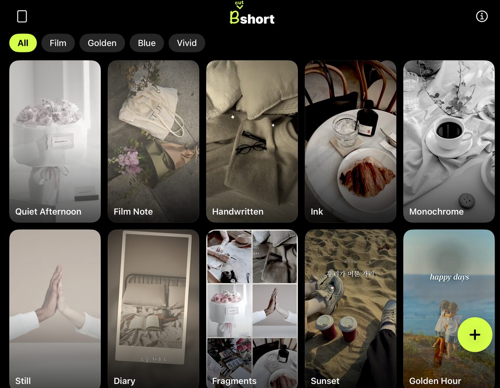
Unfold a foldable and more templates fit on each row, and videos play whole instead of cropped.
Privacy
There is no server to send them to. Selection, compositing and export all happen on the device, and the app has no account to sign in to. It is free and carries ads, which means Google AdMob collects the usual advertising identifier and device information — all of it written out in the privacy policy.
Free on the App Store. One mood and a few photos is all it takes.